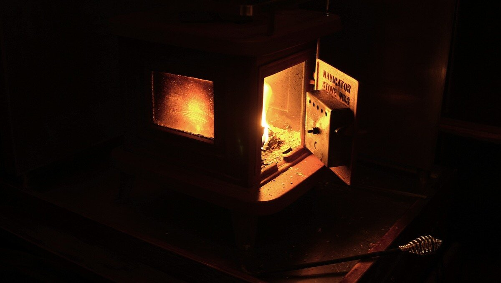

heating

Cruising in cold places means that you need a reliable way to heat your boat. A system that uses no, or little power is preferable.
Carbon Monoxide. With heating in small spaces a C0 detector is essential, as is good air circulation. Always keep a hatch open so the air can keep moving, with proper ventilation, the gas is carried harmlessly away. Carbon monoxide binds to the red blood cells 200 times better than oxygen. As carbon monoxide attaches to red blood cells, it keeps oxygen from properly binding. The symptoms of carbon monoxide poisoning can be very similar to those of the flu (headache, dizziness/light-headedness, confusion/altered levels of responsiveness, weakness or fatigue, muscle cramps, nausea/vomiting & chest pain). If you suspect C0 poisoning, exit and ventilate the area.
Dispersing heat around the space is difficult on a boat, but not impossible. Caframo thermoelectric EcoFans make use of the heat generated by the stove to push air around without using electricity.
When talking about space heating, we tend to forget that our own bodies are heating appliances too. The largest part of heat loss occurs via the skin, and wearing sufficient clothing prevents body heat from escaping into the environment. Insulating our bodies is more efficient than insulating the space they're in, requiring only a small layer of air to be heater as opposed to warming all the air in a room to achieve similar results. In winter, thermal clothing is a very smart idea.
Before an emergency strikes in the winter, make sure you've got a way to warm your home. For a boat, consider building a copper coil alcohol heater. See instructions here(GoogleDrive document, 2 MB).
Below are the heating systems we're most familiar with, having had both aboard Pino:

Diesel-fired forced hot air heating system: Forced air heaters are fitted with an electrically powered fuel pump, flame ignition device, forced draft combustion chamber and heat exchanger, fuel metering pump, and integrated control unit. Hot air is circulated through the boat via flex tubes to vents. They are compact, fuel efficient and make use of an existing fuel onboard(diesel). The downside is that they are not cheap, they use a lot of power on start-up, and they need to be run often otherwise they will clog up.

Solid fuel stove: A solid fuel stove requires space, a chimney on deck, and considerable heat shielding, but is a good option to heat a boat without electricity. A solid fuel stove also doubles as a cook stove, serving as a backup to the main stove. Solid fuel stoves on boats will likely be very small, and will have to be stoked often(esp wood stoves). Another thing to remember, is that you'll need to have space to store wood, or charcoal. Charcoal should be stored away from the stove in a metal, air-tight container. Wood should be kept dry, and cut small to fit into the small firebox. An option to keep wood is pressed wood logs, made entirely of wood byproducts from sawmills. They have long burn times and occupy less space. See our woodstove.
Woodstove tips:
- Prime the flue on start-up. Light a candle and place it inside the stove near the opening of the flue to help dissipate cold air that may be lingering inside. Cold air in the flue can cause smoke to back flow in. Another good trick is to wad up newspaper tightly, light it, and to aim it inside the opening of the flue.
- How to clean glass window of stove. Wetting a bit of newspaper and dipping it in ash is a good trick to remove build-up on glass windows. Moistened brown paper and ash also works.
- How to avoid creosote build-up. Buildup is the result of smoldering fires, which produce a lot of smoke because of the lack of oxygen. Wet wood and other types of wood are other culprits. There will be very little creosite if the fire burns hot until all wood is combusted, and if the dampers are turned down, allowing the coals to slowly burn out.
- What to do in the event of a chimney fire. If you ever have a chimney fire, put a bunch of wet newspaper in the firebox to smother the fire and also to steam up and smother the flue.
- Banking a fire. Banking a fire is an art. The basic idea is to burn the logs from one side. You can do this by coal placement, wood placement, using ash to block off one side, log size and even wood type. The idea is to make the fire burn hot but long by burning from one side only so that it burns well, but slower because it burns from one side of the log to the other instead off all the log at once. (Last three tips courtesy of Kyle P. Cunningham)
- Wood. Chopping your own kindling is cheaper than getting it pre-cut, it is available everywhere. To split logs, you must carry a hatchet or an axe aboard. We have a hatchet because a full size axe isn't practical on a boat our size, but the weight of a larger axe makes it easier to make cuts. We use a hammer along with the hatchet to help split logs. Of course, we must cut the wood again with a handsaw so that it fits inside the small stove.

Electric heaters: We only use electric heaters when tied to a dock, we carry two aboard Pino. We chose a heater with many heat settings, which can draw less or more power. Many heaters only have settings that output at a constant 1000-1500W, but one that can be set more granularly, at 600W, 900W and 1500W is ideal. 600W is often enough to warm up the boat, and it's not as power demanding.